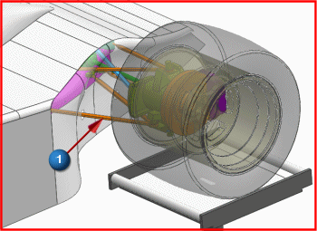

创建仿真和 FEM 文件
 仿真导航器
仿真导航器
-
 demo_assy_flex.prt
demo_assy_flex.prt -
 新建 FEM 和仿真
新建 FEM 和仿真新建 FEM 和仿真对话框列出了三种将要创建的文件：仿真文件、FEM 文件以及理想化部件文件。
求解器环境组中列出了 NX Nastran 作为求解器，分析类型是结构。
-
要使用的体
选择

-
类型过滤器
实体
提示
类型过滤器
 位于工具条区域的选择条上。
位于工具条区域的选择条上。 -
 (下方的悬臂)
(下方的悬臂)
-
确定
新建 FEM 和仿真对话框
解算方案对话框出现。
-
解算方案类型
SOL 103 柔性体
-
工况控制
-
 (Lanczos 数据)
(Lanczos 数据)
-
频率范围 – 下限
0
-
所需模态数
20
这个指定的频率范围代表求解器将计算将从最低频率0开始的20个模态数以内的频率。
如果增加了所需模态数，可以获得更加精确的结构表示，但同时也花费更多的求解时间。您应该包含足够的模态数来覆盖相关的频率范围(根据您自己的机械系统)。
-
确定
实特征值 – Lanczos1对话框
注意
接受柔性体解算方案类型以及柔性体导出选项的默认设置，这些选项是为了要手工集成 RecurDyn 或者 Adams 软件包，不应该在 NX 运动仿真中更改，如果您更改了这些默认设置，运动仿真柔性体解算方案可能无法求解。
-
确定
解算方案对话框